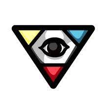

|  |
Deidad es un objeto pasivo introducido en The Binding of Isaac. Las lágrimas siguen a los enemigos con un aura que causa daño. Da Estadística Daño.png + 0.5 Daño,Estadística Lágrimas - 0.3 Lágrimas, Estadística Rango.png + 1.2 Rango, Estadística Velocidad del proyectil - 0.3 Velocidad del proyectil y +0.8 de altura de lágrima. |
The El D6 es un objeto activable introducido en The Binding of Isaac. Cambia los objetos de la habitación actual por otros objetos de la fuente de obtención de objetos de la misma habitación. |
Las lágrimas son reemplazadas por un rayo láser que atraviesa a todos los enemigos y obstáculos en su camino y causa mucho daño. Necesita ser cargado. Es un tipo de lagrima que te lo atribuyen varios objetos, normalmente dados por el diablo mediante pactos de vida. Azazel tiene una versión con menos rango de esta habilidad. Se puede hacer pacto por él a coste de 2 corazones rojos. |